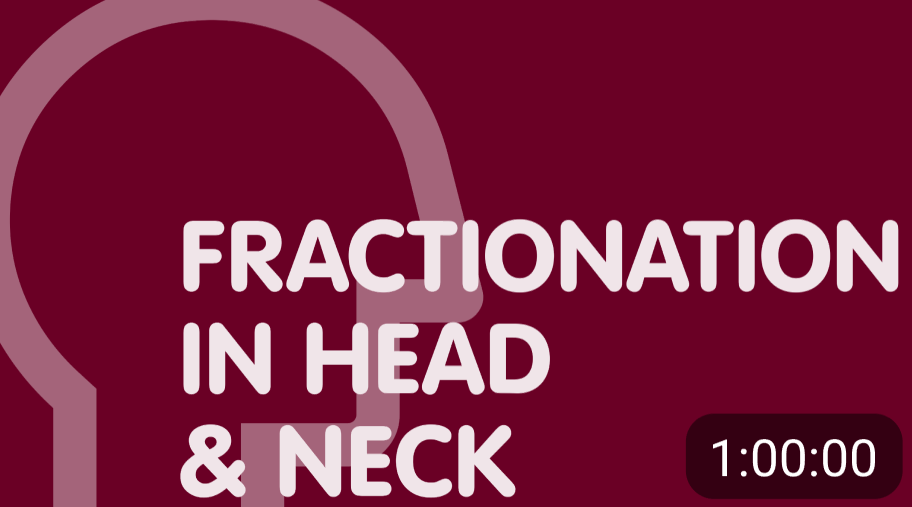

Articles
These may be relevant
Fractionation in head & neck

Sinds juni 2021 ben ik werkzaam als verpleegkundig specialist bij de mamma interne geneeskunde in het Antoni van Leeuwenhoek. Het Antoni van Leeuwenhoek spreekt mij aan door de combinatie van multidisciplinaire zorg & wetenschappelijk onderzoek. Dit zorgt voor een hele fijne samenwerking tussen de verschillende betrokken disciplines en bovenal voor excellente- en persoonsgerichte zorg voor de patiënten.
Comments